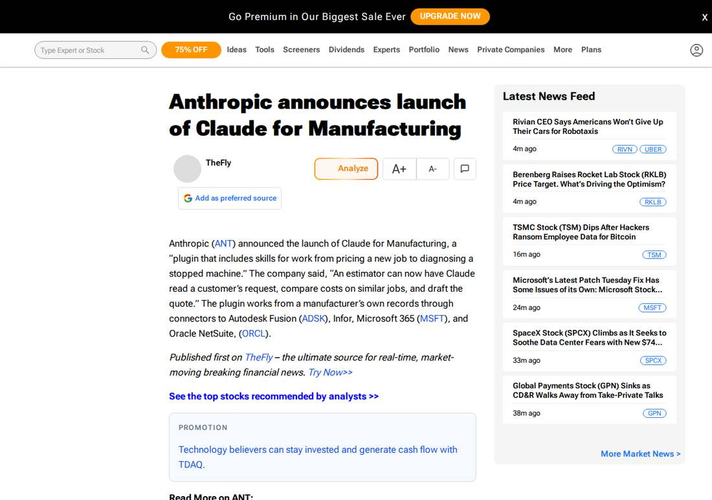

Anthropic Launches Claude for Manufacturing With 17 Workflow Skills
Anthropic launched Claude for Manufacturing on November 12, 2026, a plugin for Team and Enterprise plans with 17 skills for quoting, quality investigations, maintenance diagnosis, purchasing, design and production reporting, working from manufacturers' own records through connectors to Autodesk Fusion, Infor, Microsoft 365 and Oracle NetSuite. Every workflow ends in human review, and the plugin does not operate equipment. Infor announced its own plugin the same day, letting approved changes flow back into Infor from Claude.
- 01THE LAUNCH — Anthropic launched Claude for Manufacturing on November 12, 2026, a plugin for Team and Enterprise plans with 17 skills and four connectors to manufacturers' own records.
- 02THE PARTNERSHIP — Infor announced its own plugin the same day, letting approved changes such as releasing a purchase order flow back into Infor from Claude, with Claude named Infor's preferred AI assistant.
- 03THE WATCHPOINT — Whether plant teams adopt the plugin for quotes and corrective action reports, whether the Infor integration widens beyond select Velocity Suite customers, and whether more vertical plugins follow.
WHAT HAPPENEDWhat Happened
Anthropic launched Claude for Manufacturing on Thursday, November 12, 2026, a plugin for Team and Enterprise plans that brings Claude into plant-office work. The plugin packs 17 skills covering sales, quality, operations, supply chain, design and setup, and connects to manufacturers' own records through four connectors: Autodesk Fusion, Infor, Microsoft 365 and Oracle NetSuite.
The skills carry processes to the point of human review. An estimator can have Claude read a customer request, compare costs on similar jobs and draft a quote. A quality engineer can have Claude document a failed inspection, check past reports for the same problem, rank the likely causes and draft the corrective action report. A technician can have Claude read sensor exports, repair notes, photos and the manual, then rank the likely causes of a breakdown. A buyer can have Claude prepare a request for quotes and compare the bids that come back.
The design keeps consequential decisions with people. Every skill is built to end with a user's review, and Claude links figures and claims back to the underlying data and documents. The plugin does not operate equipment. For programmable machines, Anthropic is developing a separate Model Hardware Standard research preview that gives equipment a standard way to describe its measurements, settings and safety limits.
Infor, which makes core software for manufacturers, announced its own plugin the same day. With the Infor connector in Claude for Manufacturing, teams can look up records; with Infor's plugin, they can also make approved changes in Infor from Claude, such as releasing a purchase order to another supplier and rescheduling affected production. Infor named Claude its preferred AI assistant for interacting with its products, and Claude models the preferred models for its Industry AI solutions. The integration is available to select Infor Velocity Suite customers.
WHY IT MATTERSAnthropic's vertical push, with the guardrails as the product
Claude for Manufacturing is Anthropic moving from a general assistant to industry-specific workflows. The pitch is not capability but control: every skill ends in human review, the software of record stays the system of record, and Claude does not touch the factory floor. That framing is aimed squarely at manufacturers who will not let an agent near production equipment, and it is the reason Infor could sign on as a partner rather than a wary observer.
The 79% figure does the selling. In a 2025 Manufacturing Leadership Council survey, 79% of manufacturers said they still enter data manually. The plugin's job is the information gathering around plant decisions, not the decisions themselves, and the Infor partnership shows the model: look up records in Claude, make approved changes back in Infor, with permissions following the buyer's Infor role.
WHAT TO WATCHAn IPO-week enterprise play
The launch lands days before Anthropic's expected IPO pricing on November 18. A vertical plugin with a named enterprise partner is the kind of revenue story roadshow investors want to hear, and manufacturing is a large, underserved market for AI assistants. Watch whether other vertical plugins follow, and whether the Infor integration, currently limited to select Velocity Suite customers, widens.
The technical webinar on November 17 will show the plugin at work. The open question is adoption: whether plant teams trust Claude with quotes and corrective action reports, and whether the skills hold up against messy, incomplete plant records rather than clean demos.
SIGNAL JUDGMENT — ANALYSISThe factory floor gets an assistant that stops at the review desk
Tokenta Signal's judgment: Claude for Manufacturing is less about what Claude can do in a plant than about what it refuses to do. No equipment operation, no writes to systems of record, every draft ending in human review: those limits are the product, and they are what let Infor put its name on the partnership. The commercial logic is plain, with 79% of manufacturers still entering data by hand, the information layer around plant decisions is a large market. The test now is whether plant teams trust the drafts enough to use them, and whether the Infor integration widens beyond select customers.
WHAT REMAINS UNCERTAINWhat Remains Uncertain
EVIDENCEEvidence

Anthropic's official announcement, read in full: Claude for Manufacturing is a plugin with 17 skills for work from pricing a new job to diagnosing a stopped machine, working from a manufacturer's own records through connectors to Autodesk Fusion, Infor, Microsoft 365 and Oracle NetSuite. Every skill is built so the person responsible can review and approve the work before it reaches a customer or supplier, and the plugin does not operate equipment.
PRIMARY SOURCESPrimary Sources
- Anthropic · Claude: Claude for Manufacturing: AI plugin for plant teams
https://claude.com/resources/articles/claude-for-manufacturing - Manufacturing Dive: Anthropic launches 'Claude for Manufacturing'
https://www.manufacturingdive.com/news/anthropic-launches-claude-for-manufacturing/874303/ - Infor: Infor and Anthropic Announce Partnership That Turns Insights into Actions for Manufacturing Operations
https://www.infor.com/news/infor-and-anthropic-announce-partnership - TipRanks: Anthropic announces launch of Claude for Manufacturing
https://preprod.tipranks.com/news/the-fly/anthropic-announces-launch-of-claude-for-manufacturing-thefly-news
RELATEDRelated Intelligence
- DeepMind Opens the Datasets Behind Its AI Weather Models
- Microsoft Warns of Phishing Campaign Exploiting the Microsoft 365 Outage
- Microsoft 365 Outage Fully Closed as Business and Exchange Incidents Marked Service Restored
- Microsoft 365 Consumer Incident Remediated as Email Backlog Clears; Business Outage Still Open